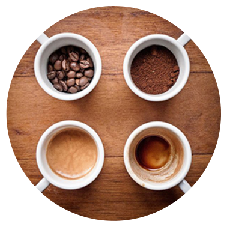
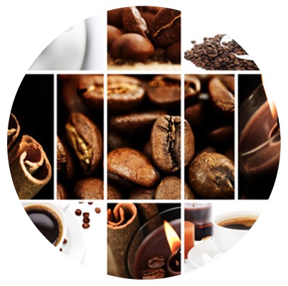

主要经营：咖啡豆、咖啡机、红茶...
- 产品中心
-
冰拿铁咖啡:
利用果糖与牛奶混合增加牛奶的比重，使它与比重较轻的咖啡不会混合，成为黑白分明的...[详情]
- 
- 
-
蓝山咖啡：
酸味、甜味、苦味均十分调和 又有极佳风味及香气，适合做单品 咖啡，宜做中度烘...[详情]

更多 >>


主要经营：咖啡豆、咖啡机、红茶...
利用果糖与牛奶混合增加牛奶的比重，使它与比重较轻的咖啡不会混合，成为黑白分明的...[详情]
酸味、甜味、苦味均十分调和 又有极佳风味及香气，适合做单品 咖啡，宜做中度烘...[详情]
新闻中心
2015年4与22日是第46个世界地球日当天上午9点至12点 2015年4与22日是第46个世界地球日。当天上午9点至12点 香记咖啡将在...[全文]
2015年4与22日是第46个世界地球日当天上午9点至12点 2015年4与22日是第46个世界地球日。当天上午9点至12点 香记咖啡将在...[全文]
公司起源
香记咖啡集团始创于1936年，迄今为止已有70多年的历史，是 一家专业咖啡国际生产企业，同时也是中国目前最大的咖啡、斯里兰 卡红茶生产商与进口咖啡机代理商之一，总部设在香港九龙，并于中 国大陆的北京、上海、广州、深圳、江门、珠海、重庆等大中城市设 立分公司为广大客户提供销售及售后服务。香记集团位于广东江门 市白石凤山工业园区的生产基地拥有世界先进水平的智能化标准车间， 意大利和德国进口的烘焙设备及经验丰富的咖啡烘焙师，产品已通过 ISO9001国际质量管理体系认证，并获得中国食品生产许可证（证书编 号QS 4407 2101 0015）是国际知名品牌MOVENPICK of Switzerland在 香港、澳门、中国大陆及东南亚指定的独家咖啡烘焙厂和总代理商。